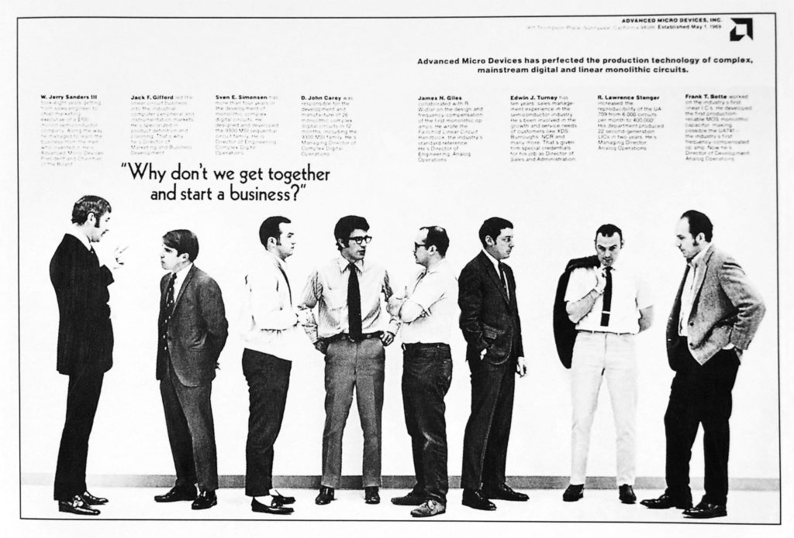

Contextualización
AMD (Advanced Micro Devices) es el líder de computación de alto rendimiento y adaptable, que impulsa los productos y servicios que ayudan a resolver los desafíos más importantes del mundo. Nuestras tecnologías permiten avanzar en el futuro de los mercados de centros de datos, sistemas incorporados, experiencia de juego y PC.
Fundada en 1969 como una start-up de Silicon Valley, el viaje de AMD comenzó con decenas de empleados enfocados en productos semiconductoresde última generación. AMD se convirtió en una empresa global que establece el estándar de la computación moderna, con muchas innovaciones importantes en el sector y grandes logros tecnológicos a lo largo del camino.
La compañía nos ofrece procesadores y tarjetas gráficas de desarrollo propio. En los últimos años la compañía ha logrado recuperar el terreno perdido frente a Intel en el mercado de procesadores y frente a NVIDIA en el mercado de las tarjetas gráficas
¿Qué es AMD?
Son las siglas de Advanced Micro Devices, Inc, aunque lo normal es
encontrarla por sus siglas AMD. Actualmente es el segundo fabricante
del mercado en cuanto a procesadores de sobremesa y tarjetas
gráficas.
En el mercado de tarjetas gráficas también han dado un
gran salto. La compañía ha desarrollado la arquitectura RDNA que
está directamente pensada para el gaming. Es más, la arquitectura
RDNA2 @ 7nm es la primera en ofrecer soporte a la tecnología
RayTracing.
La compañía no solo diseña sus propios chips, también diseña chips
para terceros. Estos chips semi-personalizados son bastante
apreciados en la industria. Las consolas PlayStation 4 y PlayStation
5 se basan en soluciones desarrolladas por AMD. Las consolas Xbox
One y Xbox Series X también se basan en SoC personalizados para esta
consola.
Historia de AMD
AMD se funda el 1 de mayo de 1969 cuando varios ejecutivos de Fairchild Semiconductors, entre los que se encontraban Jerry Sanders, Edwin Turney, John Carey, Steven Simonsen y Jack Gifford, quienes a su vez se asociaron con tres miembros del equipo Gifford, como son Frank Botte, Jim Giles y Larry Stenger, para producir circuitos integrados, inicialmente enfocados en las memorias RAM, introduciendo los primeros productos en 1975. Ese mismo año copiaron el Intel 8080 y lanzaron el AMD 9080.
A diferencia de Intel, AMD no tiene fábricas propias para fabricar sus procesadores. Únicamente diseñan sus procesadores y subcontratan a fundiciones para su producción. TSMC es la fundición que actualmente fabrica todos los procesadores y gráficas de la compañía. Anteriormente era GlobalFoundries, pero esta fundición decidió dejar la carrera de las litografías en nanómetros.
Nuestra Visión
La computación de alto rendimiento y adaptable están cambiando nuestras vidas.
Nuestra Misión
Fabricar grandes productos que agilicen las experiencias de informática de última generación.
Eslogan
"Para lograr un progreso real, es necesario que la innovación revolucionaria y el ingenio humano se unan para crear algo excepcional."
Microchips
Un microchip es una pieza pequeña que almacena mucha información mediante un circuito integrado (CI) dentro de una cápsula del tamaño de un grano de arroz.
El conflicto entre China y Estados Unidos es una crisis que ha atenazado a la industria de los semiconductores durante casi dos años y medio, y que en gran medida continúa haciéndolo.
Taiwan Semiconductor Manufacturing Company (TSMC) acapara nada menos que el 54% del mercado de semiconductores.
La compañía que dirige se vería obligada a paralizar sus fábricas (al menos las que tiene en suelo taiwanés) debido a la más que probable dificultad que tendría para acceder a las materias primas, los elementos químicos, los componentes de hardware y las herramientas de ingeniería que necesita para sostener la producción.
Procesadores / Unidad de procesamiento gráfico | Central Processing Unit (CPU)
Se le suele llamar coloquialmente como microprocesador o simplemente procesador, y puedes considerarla como el cerebro de cualquier dispositivo. Se encarga de procesar todas las instrucciones del dispositivo, leyendo las órdenes y requisitos del sistema operativo, así como las instrucciones de cada uno de los componentes y las aplicaciones.
Tarjetas Gráficas / Unidad de procesamiento gráfico | Graphics processing unit (GPU)

La tarjeta gráfica o tarjeta de vídeo es un componente que viene integrado en la placa base del PC o se instala a parte para ampliar sus capacidades. Concretamente, esta tarjeta está dedicada al procesamiento de datos relacionados con el vídeo y las imágenes que se están reproduciendo en el ordenador.